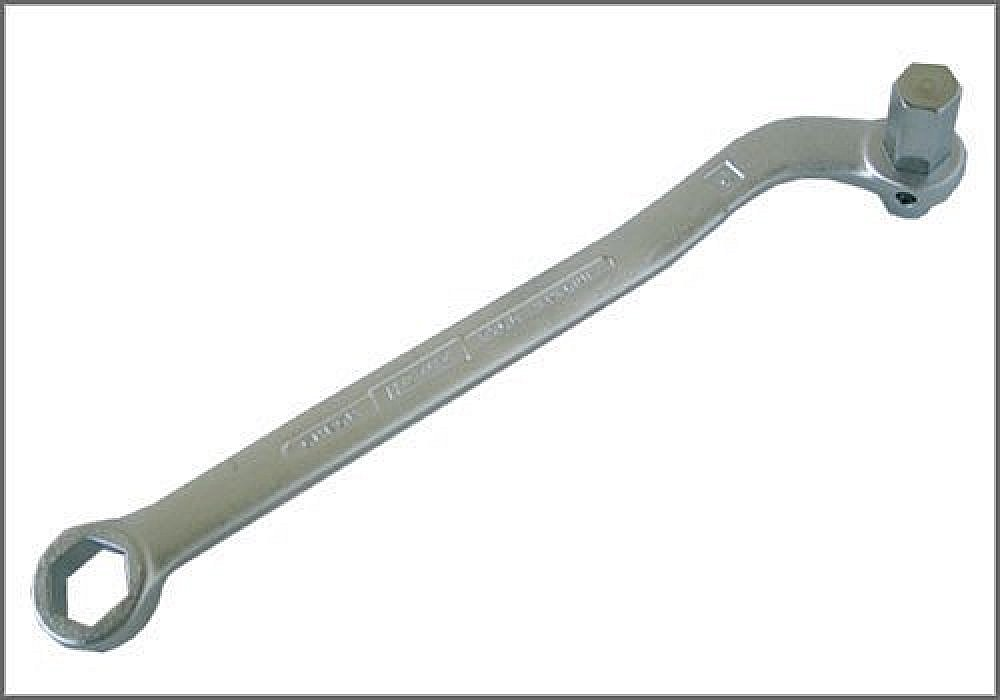

Oil Drain & Plug Wrench - AST Tool # H 2760
Oil Drain & Plug Wrench
AST tool# H 2760

14mm Allen, 17mm box wrench used for the R and R of the differential oil filler plug on many BMW and Mercedes Benz models.
- Applicable to BMW and Mercedes
- Steel Construction
Contact AST for pricing.
Assenmacher Specialty Tools
1-800-525-2943